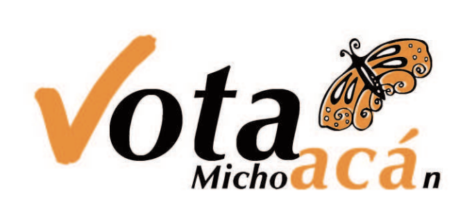
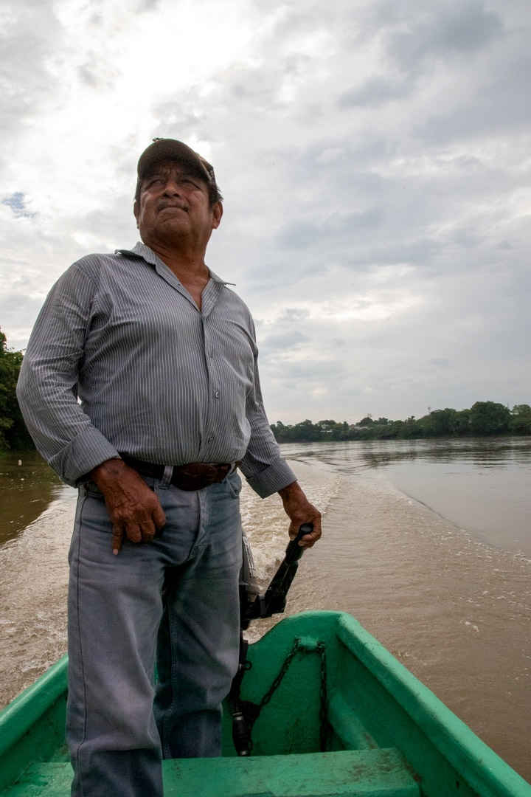
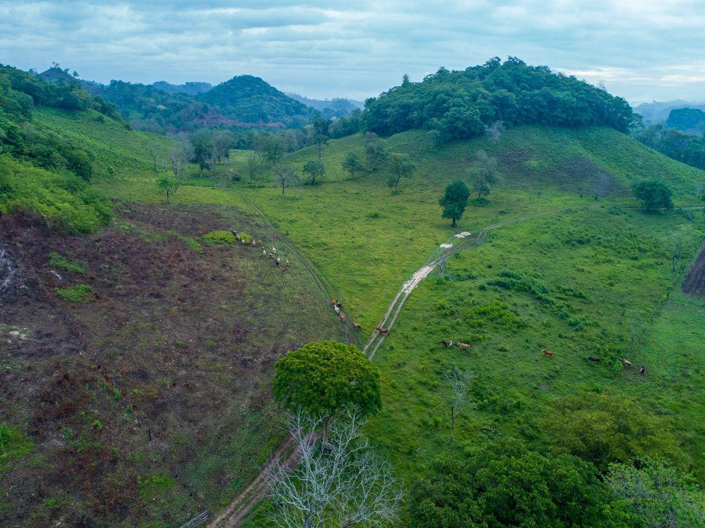
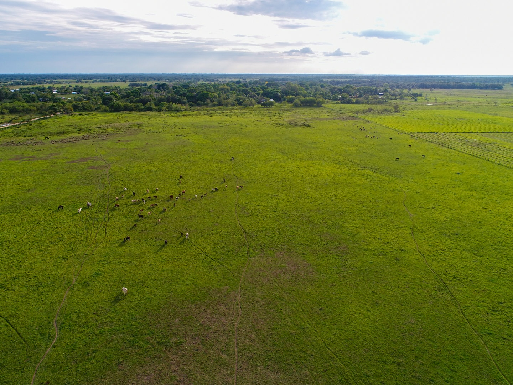
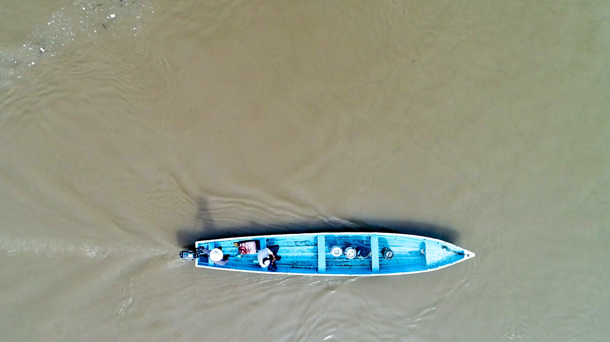

Axel Escutia - Frontend Engineer specialized in Interactive Systems and Multimedia Applications
AXEL_OS_KERNEL_v2.5.0 (tty1)
guest@axelescutia:~$█
> STANDBY|48kHz|24bit|OK
Multimedia Signal Processing Pipeline
Interactive visualization of audio signal processing including waveform analysis,
frequency spectrum, filter chains, and stereo channel monitoring.
Tools: Adobe Audition, Premiere Pro, DaVinci Resolve, Web Audio API.
AXEL ESCUTIA
FULL STACK ENGINEER || MULTIMEDIA PRODUCER
Integrating high-performance backend systems with production-quality visuals.
Senior Full Stack Engineer project: FIRA Institutional Portal ecosystem modernization. Technical stack: Java Backend, Oracle, JavaScript ES6+, and CSS Grid. Key features: WAI-AAA accessibility compliance, 12 responsive breakpoints, and modular widget architecture for financial intermediaries and producers.
Producción

AgroEmpresas

Intermediación
📐 12 Responsive Breakpoints
👁️ WAI-AAA Accessible
🌓 Dark Mode / Reduce-Motion
Cinematic & Brand Storytelling
Directing, producing, and editing narrative-driven content.
Lead Multimedia Producer: Cinematic Showreel and Hitos FIRA 70th Anniversary project. Expertise in broadcast-quality video production, professional cinematography, and high-end narrative editing for institutional storytelling.
Active Software Developer profile on GitHub. Expert in Git version control, Open Source contributions, and consistent JavaScript development workflows. Demonstrating proficiency in continuous integration and code quality metrics.
Experience integrating RESTful APIs, handling asynchronous data flows, and connecting frontend applications with backend services and serverless platforms.
Loading status...
Less
More
El Podcast de FIRA
Producer / Editor
Audio Producer and Technical Architect: El Podcast de FIRA. Managed full production pipeline including multi-track mixing in Adobe Audition, custom XML/RSS feed syndication, and automated distribution to Spotify and Apple Podcasts.
The Lab
Game Dev
Research and Development (R&D) specialist in Real-time Interactive Systems. Utilizing Unity, C#, and Love2D to build interactive simulations.
Viveros Smart Access PWA
IoT Integration
IoT Systems Architect: Viveros Smart Access Progressive Web App (PWA). Integration of Webhooks. Built with Supabase, Firebase, and Camera API for secure QR-based physical access control and real-time gate automation.
Main Gate Access
Scan the QR code
Connection: Secure
🧾 Descargar Recibo
Generative AI Multimedia
Next-Gen Visual Storytelling
AI Creative Technologist: Specialist in Generative AI Video pipelines. Expert in node-based workflows using ComfyUI, Stable Diffusion, and Google Colab for character consistency and temporal stability. Developed synthetic media solutions including neural voices, photorealistic avatars, and stylized character animation.
Promotor's Toolkit
Offline by Design
Lead PWA Developer: Promotor's Toolkit for FIRA field operations. Engineered with Offline-first architecture, Service Workers, and IndexedDB. Optimized for low-end mobile hardware to provide instant access to complex credit regulations without network connectivity.
Search Normativa...
Créditos
Garantías
Tasas
Zonas
Motion Graphics Showcase
A reel of animated explainers and VFX.
Motion Designer and Technical Illustrator. Specialized in high-end 2D/3D explainers for complex financial processes. Expert in After Effects, kinetic typography, and data visualization, converting dense institutional data into compelling visual narratives and VFX composites.
IEM Vote Tracking
PROTOCOL: SILVME_ANONYMITY_V1
Backend Engineer: International Voting Logistics System (IEM). Architecture of PHP/MySQL registry (SILVME) with hardware barcode integration. Implemented custom anonymity protocols to maintain secret ballot integrity across transnational mail logistics.
PHP / MySQLHardware Integ.

> Packet Scanned: 492-MX
> Lookup: Valid Voter Reg.
> Action: Update `status` = RECEIVED
> PRIVACY CHECK: VOTE SEPARATED
_
Visual Assets & Photography
RAW / 4K
Architecture / Field Documentation / Post-Processing
Lead Photographer and Digital Asset Manager (DAM). Mastery of the professional RAW development pipeline using Adobe Lightroom and Photoshop. Specialized in field documentation and architectural photography, managing the complete asset lifecycle from capture to high-res print and digital syndication.

ISO 100f/2.81/200s35mm



Filenamephoto_01.cr2
AuthorAxel Escutia
Rating⭐️⭐️⭐️⭐️⭐️
FIRA Cifras API
Saldo
Flujo
Data Visualization Engineer: FIRA Financial Dashboard API. Custom Vanilla JS engine using SVG DOM manipulation for real-time charting. Algorithmic logic for parsing large CSV datasets with zero backend latency and W3C browser compatibility.
Month$0.00
Connecting to CORS Proxy...
Live Broadcast Ops
LIVE
Multi-Cam / Nationwide Logistics / RTMP
Broadcast Engineer & Field Producer: Nationwide live streaming operations. Manages multi-cam setups and RTMP/HLS protocols via OBS and vMix. Acts as the technical liaison between creative departments and specialized technicians to deliver zero-failure events via YouTube, Facebook Live, and MS Teams.
Frontend Engineer specializing in interactive systems, multimedia applications,
and high-performance platforms for institutional and financial environments.
Available for roles focused on scalable UI architecture and accessibility compliance.